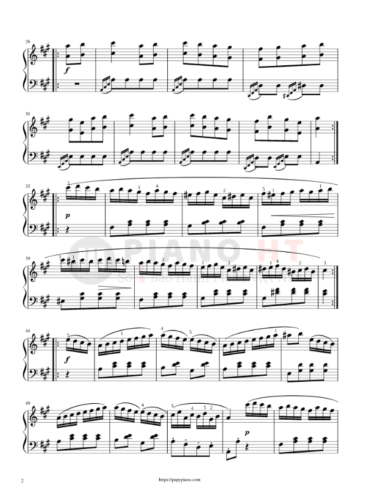

Thông tin tác phẩm
- Nhạc sĩ Wolfgang Amadeus Mozart
- Sáng tác 1783
- Thể loại Piano Sonata
- Tên gốc Rondo Alla Turca
- Tông nhạc A Minor

“Một trong những giai điệu piano nổi tiếng nhất
trong lịch sử âm nhạc cổ điển.”
“Turkish March” mở đầu bằng tiết tấu nhanh,
dứt khoát và đầy năng lượng,
tạo cảm giác như một đoàn diễu hành
đang tiến bước nhịp nhàng.
Những đoạn âm thanh lặp ngắn,
kết hợp cùng nhịp điệu rõ ràng
khiến bản nhạc mang màu sắc rất vui tươi và sống động.
Mozart liên tục sử dụng
các đoạn chạy ngón linh hoạt
và chuyển đổi sắc thái nhanh,
khiến giai điệu vừa mang tính kỹ thuật,
vừa giữ được vẻ nhẹ nhàng,
thanh thoát đặc trưng trong âm nhạc của ông.
Phần chủ đề chính của tác phẩm
đặc biệt dễ nhận ra
nhờ nhịp điệu dồn dập
và cấu trúc lặp cuốn hút.
Chính sự kết hợp giữa tốc độ,
tính vui nhộn và vẻ sang trọng cổ điển
đã khiến “Turkish March”
trở thành một trong những giai điệu piano
nổi tiếng nhất thế giới.